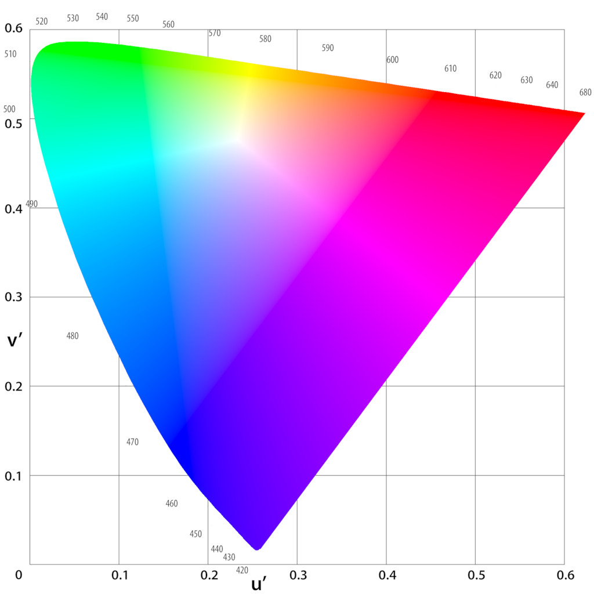

Colour Theory Part 1
Most guides to colour theory start with the colour wheel. I want to start a step before that, with the colour spectrum. We are all familiar with the rainbow; travelling from the outside in takes us on a journey through the color spectrum — from the reds, through the greens to the blues. So how are we supposed to end up back at the reds again?

The color wheel is a rainbow wrapped up into a tube. But, if you know a little about physics, doing such a thing makes no sense. The visible spectrum is a set of light rays with wavelengths between 380 to 740 nanometers. Yet there are light rays with wavelengths above than 720 nm, called variously infra red radiation, microwaves and radio waves. And there are light rays with wavelengths below 380 nm called ultraviolet light, x-rays and gamma-rays. The colors that we see represent just a small chunk of the entire electromagnetic spectrum — an unbroken line that takes us from the longest wavelengths to the shortest wavelengths. So what sense is there in taking a small and arbitrary (some animals can see far more of the electromagnetic spectrum than we can) segment of that spectrum and wrapping it up into a circle? Indeed, to make the red and the blue end fit together we've had to invent a new colour of our own - one you would never find on a rainbow - pink! minutephysics has an excellent video explaining the origin of this mysterious colour:
There is no pink light! So how can we see it? It may not be on the rainbow but it is as distinct from red as red is from orange, and we all know what a pair of pink shoes looks like. Pink is a hint that we are not seeing the world as it truly is, that our perceptions of the world do not correspond to reality. Pink is how our brains interpret the event of red and blue light entering our eyes at the same time. If we want to understand color, we have to understand the messy interactions between light and our eyes, and our eyes and the brain. You can learn as much as you like about the electromagnetic spectrum, but that's not going to help you when it comes to colour. With that in mind, let's have a look at how the eye works:

The thin lining at the back of your eye, called the retina, houses rod and cone cells. These are specialised nerve cells that can detect light. Rods work in low light but can't detect color — that's why everything appears greyer at night. So it's the cones we're after; there are three kinds of cone cell and each responds differently to colour. The graph below shows the strength of the signal a given wavelength of light produces in each photoreceptor. Note that, even though the cone cells are labelled blue, green and red according to the color that they are most sensitive to, there is a large overlap between them so that pure blue light excites not only the blue cone cells, but the red and green ones too.
Your brain has to work with just the signals from these three photoreceptors. From your brains perspective, color occupies a three dimensional space - one dimension for each type of cone cell. For that reason it takes three numbers to specify any given color. Your computer screen is composed of tiny red, green and blue light emitting diodes. I can tell the screen how much of each color light to produce using an rgb function. Let's try it — rgb(255,0,0) is bright red, rgb(100,0,0) is dark red and rgb(255,0,100) is pink! But there are other sets of three numbers that can be used to characterise each color, like hue, saturation and brightness. Brightness is a measure of how intense the light is, and so in a sense is less important than the other two when it comes to our perception of color. Removing brightness from the equation leaves us with just two parameters to work with and the remaining color space can be represented with a two-dimensional graph. Below is an attempt to plot this two-dimensional space in such a way that equal distances correspond to equal perceptual differences between the colors.
This uniform chromaticity diagram (UCD) has a strange shape. It's shape is determined by the range of possible signals produced by the three cone cells. It is impossible for the green cones to be activated without also activating the reds or blues, so the boundary of this diagram represents the limit of what kind of signals are phyically realisable. Monochromatic light (the colours of the rainbow) lies along the curved edge of the diagram, while the straight edge, called the 'line of purples' represents all the colors that can be made from mixing the blue and red light that lie on opposite ends of the spectrum. In fact, this kind of construction is true in general for the diagram — choose any two colors; every color that can be created through mixing the two lies on the line between them. The midpoint of the line roughly corresponds to an equal mixture of the two colors. It doesn't take much imagination to see how this UCD relates to the color wheel. Through squeezing and stretching the diagram can be coerced into a circle. We're trying to fit a trianguloid into a round hole and we lose a lot of the nice geometrical propeties in doing so. But at last we have arrived where we began, with the color wheel. I return to a more traditional presentation of color theory in part 2.